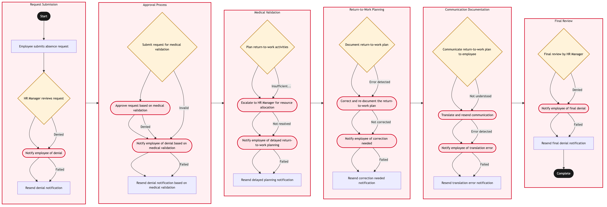

Updated 2026-08-21
Absence Leave and Return to Work Management
Process flow
Click to zoom

Process steps
▼
Phase 1 — Request Submission
4 steps
| Step | Activity | Role | System | Input | Output | KPI | Dec | Exc | Pain point |
|---|---|---|---|---|---|---|---|---|---|
| 1.1 | Employee submits absence request | Aeroplan Member Services Agent | DayforceB | Leave type, start and end dates, reason for leave | Request ID generated | 90% of requests processed within 24 hours | N | N | Manual data entry errors leading to delays |
| 1.2 | HR Manager reviews request | Senior HR Analyst | DayforceB | Request ID, employee details, leave type, dates | Review notes and approval status | 85% of requests reviewed within 4 hours | Y | N | Complex union rules causing delays in decision-making |
| 1.3 | Notify employee of denial | Aeroplan Member Services Agent | Microsoft 365C | Employee details, denial reason | Notification email sent | 98% of notifications sent within 2 hours | N | Y | Email delivery failures causing notification delays |
| 1.4 | Resend denial notification | Aeroplan Member Services Agent | Microsoft 365C | Employee details, denial reason | Resent notification email sent | 98% of notifications sent within 2 hours | N | N | Email delivery failures causing notification delays |
▼
Phase 2 — Approval Process
4 steps
| Step | Activity | Role | System | Input | Output | KPI | Dec | Exc | Pain point |
|---|---|---|---|---|---|---|---|---|---|
| 2.1 | Submit request for medical validation | HR Medical Coordinator | DayforceB | Request ID, employee details, leave type, dates | Medical validation status | 95% of validations completed within 7 days | Y | N | Delayed medical reports causing delays |
| 2.2 | Approve request based on medical validation | Senior HR Analyst | DayforceB | Validation status, employee details, leave type, dates | Updated request status | 90% of requests approved within 24 hours | N | Y | Incorrect interpretation of union rules leading to denials |
| 2.3 | Notify employee of denial based on medical validation | Aeroplan Member Services Agent | Microsoft 365C | Employee details, denial reason | Notification email sent | 98% of notifications sent within 2 hours | N | Y | Email delivery failures causing notification delays |
| 2.4 | Resend denial notification based on medical validation | Aeroplan Member Services Agent | Microsoft 365C | Employee details, denial reason | Resent notification email sent | 98% of notifications sent within 2 hours | N | N | Email delivery failures causing notification delays |
▼
Phase 3 — Medical Validation
4 steps
| Step | Activity | Role | System | Input | Output | KPI | Dec | Exc | Pain point |
|---|---|---|---|---|---|---|---|---|---|
| 3.1 | Plan return-to-work activities | Workforce Scheduler | DayforceB | Employee details, leave type, end date | Return-to-work plan | 80% of plans completed within 5 days | Y | N | Resource constraints affecting scheduling |
| 3.2 | Escalate to HR Manager for resource allocation | Workforce Scheduler | DayforceB | Employee details, leave type, end date, current resources | Resource allocation decision | 75% of escalations resolved within 1 week | N | Y | Lack of flexibility in resource management |
| 3.3 | Notify employee of delayed return-to-work planning | Aeroplan Member Services Agent | Microsoft 365C | Employee details, delay reason | Notification email sent | 98% of notifications sent within 2 hours | N | Y | Email delivery failures causing notification delays |
| 3.4 | Resend delayed planning notification | Aeroplan Member Services Agent | Microsoft 365C | Employee details, delay reason | Resent notification email sent | 98% of notifications sent within 2 hours | N | N | Email delivery failures causing notification delays |
▼
Phase 4 — Return-to-Work Planning
4 steps
| Step | Activity | Role | System | Input | Output | KPI | Dec | Exc | Pain point |
|---|---|---|---|---|---|---|---|---|---|
| 4.1 | Document return-to-work plan | HR Document Manager | DayforceB | Employee details, return-to-work plan | Documented plan | 90% of documents completed within 2 days | Y | N | Incorrect documentation leading to errors |
| 4.2 | Correct and re-document the return-to-work plan | HR Document Manager | DayforceB | Employee details, corrected plan | Revised document | 95% of corrections made within 1 day | N | Y | Persistent documentation errors causing delays |
| 4.3 | Notify employee of correction needed | Aeroplan Member Services Agent | Microsoft 365C | Employee details, correction reason | Notification email sent | 98% of notifications sent within 2 hours | N | Y | Email delivery failures causing notification delays |
| 4.4 | Resend correction needed notification | Aeroplan Member Services Agent | Microsoft 365C | Employee details, correction reason | Resent notification email sent | 98% of notifications sent within 2 hours | N | N | Email delivery failures causing notification delays |
▼
Phase 5 — Communication & Documentation
4 steps
| Step | Activity | Role | System | Input | Output | KPI | Dec | Exc | Pain point |
|---|---|---|---|---|---|---|---|---|---|
| 5.1 | Communicate return-to-work plan to employee | Aeroplan Member Services Agent | Microsoft 365C | Employee details, documented plan | Communication sent | 95% of communications sent within 24 hours | Y | N | Language barriers affecting communication |
| 5.2 | Translate and resend communication | Bilingual Translator | Microsoft 365C | Employee details, plan in original language | Translated communication | 90% of translations completed within 1 day | N | Y | Translation errors causing miscommunication |
| 5.3 | Notify employee of translation error | Aeroplan Member Services Agent | Microsoft 365C | Employee details, error reason | Notification email sent | 98% of notifications sent within 2 hours | N | Y | Email delivery failures causing notification delays |
| 5.4 | Resend translation error notification | Aeroplan Member Services Agent | Microsoft 365C | Employee details, error reason | Resent notification email sent | 98% of notifications sent within 2 hours | N | N | Email delivery failures causing notification delays |
▼
Phase 6 — Final Review
3 steps
| Step | Activity | Role | System | Input | Output | KPI | Dec | Exc | Pain point |
|---|---|---|---|---|---|---|---|---|---|
| 6.1 | Final review by HR Manager | Senior HR Analyst | DayforceB | Employee details, documented plan, communication status | Review notes and final approval | 80% of reviews completed within 2 days | Y | N | Misinterpretation of union rules leading to denials |
| 6.2 | Notify employee of final denial | Aeroplan Member Services Agent | Microsoft 365C | Employee details, denial reason | Notification email sent | 98% of notifications sent within 2 hours | N | Y | Email delivery failures causing notification delays |
| 6.3 | Resend final denial notification | Aeroplan Member Services Agent | Microsoft 365C | Employee details, denial reason | Resent notification email sent | 98% of notifications sent within 2 hours | N | N | Email delivery failures causing notification delays |
Swim lanes
Aeroplan Member Services Agent1.1 1.3 1.4 2.3 2.4 3.3 3.4 4.3 4.4 5.1 5.3 5.4 6.2 6.3
Senior HR Analyst1.2 2.2 6.1
HR Medical Coordinator2.1
Workforce Scheduler3.1 3.2
HR Document Manager4.1 4.2
Bilingual Translator5.2
Systems touched
DayforceBMicrosoft 365C
Key performance indicators
- 90% of requests processed within 24 hours
- 85% of requests reviewed within 4 hours
- 95% of validations completed within 7 days
- 80% of plans completed within 5 days
- 90% of documents completed within 2 days
Risks and control points
- Complex union rules causing delays in decision-making
- Delayed medical reports causing delays
- Incorrect interpretation of union rules leading to denials
- Resource constraints affecting scheduling
- Lack of flexibility in resource management
- Incorrect documentation leading to errors
- Persistent documentation errors causing delays
- Language barriers affecting communication
Air Canada Process Wiki — process and systems reference compiled from public sources
for IT Application Management and User Support pre-sales discovery.
Built 2026-08-21. Every system carries an evidence tier: tier C is an industry pattern and tier U is an open
question, and neither should be asserted as fact about Air Canada without confirmation in discovery.
Not affiliated with or endorsed by Air Canada. Air Canada, Aeroplan and Altitude are trademarks of Air Canada.